ML Specialty Prereq: the machine learning AIP-C01 takes for granted
AWS Certified Generative AI Developer — Professional
ML Specialty Prereq: the machine learning AIP-C01 takes for granted
This volume covers the ML engineering the AIP-C01 exam assumes you already know. The AIF-C01 volume taught the vocabulary (learning types, tokens, embeddings, RAG).
Read inward. The claim is the outer shell. Under it: the mechanism, the numbers, a worked scenario, and the exam trap.
Outer layer Claim
Start here
This volume covers the ML engineering the AIP-C01 exam assumes you already know. The AIF-C01 volume taught the vocabulary (learning types, tokens, embeddings, RAG).
Retrieval-augmented generation keeps facts outside the weights. The model answers from chunks it can cite.
Original diagram. The flow follows Amazon Bedrock Knowledge Bases: ingest, chunk, embed, retrieve, generate.
Ingestion loads documents from a source such as S3.
Chunking splits them. The strategy is fixed on the data source.
One embedding model writes vectors into a store.
A query embeds with the same model and fetches near chunks.
The model answers from those chunks and returns citations.
Mechanism
This volume covers the ML engineering the AIP-C01 exam assumes you already know. The AIF-C01 volume taught the vocabulary (learning types, tokens, embeddings, RAG). This one teaches the machinery: getting data ready, training on SageMaker, tuning, evaluating, deploying, and keeping models healthy. Read it before the AIP-C01 volumes, or keep it open as a reference while you read them.
Numbers and limits
Volatile. Quotas, model IDs, and prices move. The prose below was checked against AWS documentation on 2026-09-28. Re-check any quota or price before exam day.
This volume covers the ML engineering the AIP-C01 exam assumes you already know. The AIF-C01 volume taught the vocabulary (learning types, tokens, embeddings, RAG).
Worked scenario
Work “Start here” against one stem. Name the constraint (freshness, citation, latency, a cost ceiling, or a control that must block) and pick the smallest managed mechanism that meets every constraint.
Exam trap
Exam trap: a real service used for the wrong job, or a heavier ladder rung than the stem requires. Match the verb in the stem — cite, act, block, cheapen, or measure — to one mechanism here.
Outer layer Claim
The exam in 30 seconds
This volume follows the MLA-C01 exam, AWS Certified Machine Learning Engineer - Associate.
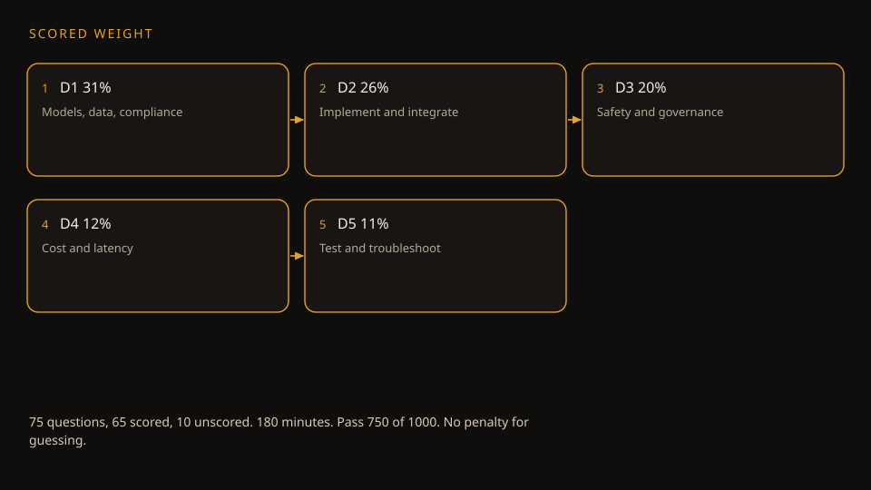
Official scored weights from the AIP-C01 exam guide. Study time follows the bars. You pass the whole exam at 750, not each domain.
Weights from the AWS Certified Generative AI Developer - Professional exam guide (AIP-C01), fetched 2026-10-20. Drawing is original.
Domain 1 is 31 percent: model, data, and compliance choices.
Domain 2 is 26 percent: agents, APIs, and integration.
Domain 3 is 20 percent: safety, security, and governance.
Domain 4 is 12 percent: cost, latency, and operations.
Domain 5 is 11 percent: evaluation and troubleshooting.
Mechanism
This volume follows the MLA-C01 exam, AWS Certified Machine Learning Engineer - Associate. AWS retired the old MLS-C01 Machine Learning Specialty. MLA-C01 is the live exam, and your premise was right.
65 total: 50 scored + 15 unscored (you cannot tell which is which)
Time
130 minutes (about 2 minutes per question)
Pass
720 out of 1000 (compensatory: no per-domain minimum)
Cost
$150 USD
Valid
3 years
Where
Pearson VUE test center or online proctored
Formats
Multiple choice, multiple response, ordering, matching, case study
Scoring
No partial credit. Unanswered counts as wrong, so answer everything.
One source quoted 170 minutes; the detailed exam guides and AWS pages say 130. Go with 130.
Domain
Weight
Scored questions (of 50)
D1 Data Preparation for Machine Learning
28%
~14
D2 ML Model Development
26%
~13
D3 Deployment and Orchestration of ML Workflows
22%
~11
D4 ML Solution Monitoring, Maintenance, and Security
24%
~12
AWS recommends about a year of hands-on SageMaker experience for this exam. As a prereq for AIP-C01, your goal is different: understand each moving part well enough that the AIP-C01 material never surprises you.
How MLA-C01 asks: a scenario with numbers and constraints, then "which service" or "which approach". The wrong answers are usually real services doing the wrong job here. Read the last sentence first, then look for the deciding word. "labeled" points to supervised, "streaming" to Kinesis (the real-time event-streaming service), "cheapest" to spot training, "lowest latency" to a real-time endpoint.
Numbers and limits
Volatile. Quotas, model IDs, and prices move. The prose below was checked against AWS documentation on 2026-09-28. Re-check any quota or price before exam day.
One source quoted 170 minutes; the detailed exam guides and AWS pages say 130. Go with 130.
Worked scenario
Work “The exam in 30 seconds” against one stem. Name the constraint (freshness, citation, latency, a cost ceiling, or a control that must block) and pick the smallest managed mechanism that meets every constraint.
Exam trap
AWS recommends about a year of hands-on SageMaker experience for this exam. As a prereq for AIP-C01, your goal is different: understand each moving part well enough that the AIP-C01 material never surprises you.
Outer layer Claim
How to use this volume
Three rungs, each with an exit test. The 4-hour rung only counts if you do each knowledge check before moving on; the 1-day rung is the 20-question practice set, not re-reading.
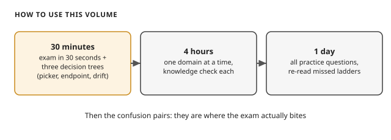
Study ladder: 30 minutes for the 30-second page, 4 hours one domain at a time, 1 day all 20 practice questions.
How to use this volume: 30 minutes, 4 hours, 1 day. Source: original figure for the AWS AIP-C01 Study Guide.
Study ladder: 30 minutes for the 30-second page, 4 hours one domain at a time, 1 day all 20 practice questions.
Mechanism
30 minutes: read "The exam in 30 seconds" and the three decision trees at the end (algorithm picker, endpoint picker, drift response).
4 hours: read one domain at a time. Do each knowledge check before moving on.
1 day: do all the practice questions. Re-read every ladder you missed.
Three rungs, each with an exit test. The 4-hour rung only counts if you do each knowledge check before moving on; the 1-day rung is the 20-question practice set, not re-reading.
Pass AWS Certified Machine Learning Engineer Associate exam on Your First Try (Cloud DevOps with Ana) Click to load this video from YouTube
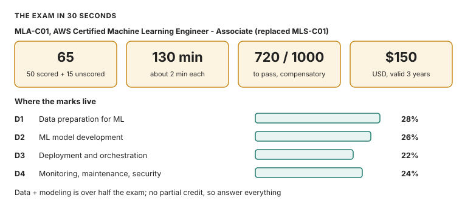
MLA-C01 at a glance: 65 questions, 130 minutes, 720 out of 1000, 150 dollars.
Four numbers, one exam. The pass bar is 720 of 1000 and compensatory: strength in one domain offsets weakness in another. AWS recommends about a year of hands-on SageMaker experience.
Watch: Pass AWS Certified Machine Learning Engineer Associate exam on Your First Try, by Cloud DevOps with Ana (about 5 minutes). ID-verified. A first-attempt passer maps the four domains, the SageMaker-heavy focus, and the biggest mistake: over-studying deep ML theory instead of service judgment. Watch first to set your expectations, then read the volume.
Numbers and limits
Volatile. Quotas, model IDs, and prices move. The prose below was checked against AWS documentation on 2026-09-28. Re-check any quota or price before exam day.
Three rungs, each with an exit test. The 4-hour rung only counts if you do each knowledge check before moving on; the 1-day rung is the 20-question practice set, not re-reading.
Watch: Pass AWS Certified Machine Learning Engineer Associate exam on Your First Try, by Cloud DevOps with Ana (about 5 minutes).
Worked scenario
Work “How to use this volume” against one stem. Name the constraint (freshness, citation, latency, a cost ceiling, or a control that must block) and pick the smallest managed mechanism that meets every constraint.
Exam trap
Exam trap: a real service used for the wrong job, or a heavier ladder rung than the stem requires. Match the verb in the stem — cite, act, block, cheapen, or measure — to one mechanism here.
Outer layer Claim
Domain 1 · Data preparation for ML (28%)
Everything starts with data, and bad data trains bad models. This domain is the biggest on the exam, and it is the one most people under-study.
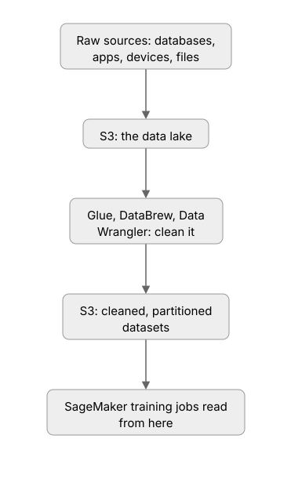
S3 is the center of gravity: raw data lands there, cleaning tools read and write there, and training jobs pull from there.
S3 is the center of gravity: raw data lands there, cleaning tools read and write there, and training jobs pull from there. Source: original figure for the AWS AIP-C01 Study Guide.
S3 is the center of gravity: raw data lands there, cleaning tools read and write there, and training jobs pull from there.
Mechanism
Everything starts with data, and bad data trains bad models. This domain is the biggest on the exam, and it is the one most people under-study. The exam tests whether you can move data into the pipeline, store it in the right shape, and catch quality problems before training.
Ladder 1: Getting data into the ML pipeline
Rung 1: The plainest picture. S3 (Simple Storage Service: Amazon's object storage) sits at the center of every ML data story on AWS. Raw data lands in S3. You store cleaned data in S3. Training jobs read from S3. When in doubt, the answer involves S3.
Rung 2: Add one layer. Data arrives two ways. Batches arrive as files or database dumps, on a schedule or once. DataSync moves files into S3. DMS (Database Migration Service) replicates databases into S3 continuously or one time. Streams arrive as a flow of events: clicks, sensor readings, transactions. Kinesis Data Streams carries them in real time. Kinesis Data Firehose (now called Firehose) delivers the stream straight into S3 with no code.
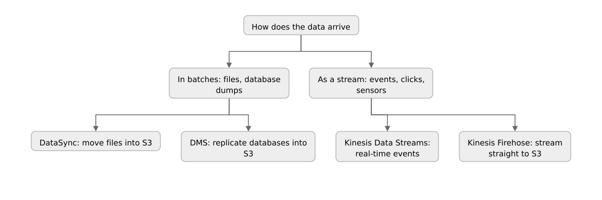
Batch vs streaming ingestion: DataSync and DMS for batches, Kinesis Data Streams and Firehose for streams.
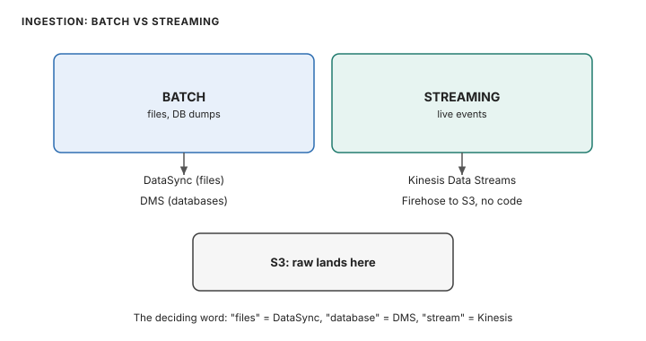
Ingestion picker: DataSync and DMS for batches, Kinesis Data Streams and Firehose for streams, all landing in S3.
Read the two columns. DataSync moves files, DMS replicates databases. Kinesis Data Streams carries live events, and Firehose delivers the stream to S3 with no code. The deciding word: "files" is DataSync, "database" is DMS, "stream" is Kinesis.
Rung 3: Exam grade. Match the tool to the source. Files on premises or in another cloud means DataSync. A relational database that must keep flowing into S3 means DMS. A live event firehose of clicks means Kinesis. Once data is in S3, the prep tools begin work. Glue runs scheduled Spark-scale ETL (extract, transform, load) with crawlers that discover schema and a Data Catalog that records it. DataBrew is the visual, no-code option for analysts. SageMaker Data Wrangler lives inside Studio (SageMaker Studio, the web-based IDE) for data scientists working in notebooks. The exam's deciding word is the persona: "data engineer, scheduled, at scale" means Glue; "analyst, no code" means DataBrew; "in a notebook" means Data Wrangler.
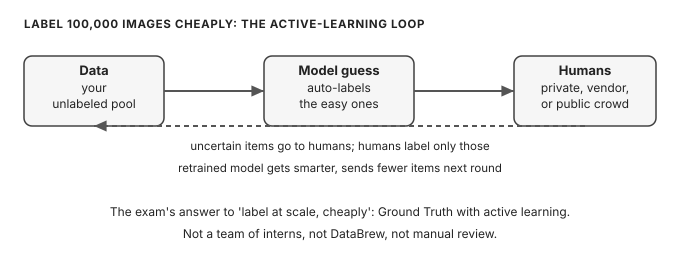
Ground Truth active learning loop: the model labels what it can, humans label the uncertain rest.
Follow the loop. The model labels what it is confident about; humans label only the uncertain items, and those labels retrain the model. That is how 100,000 images get labeled cheaply.
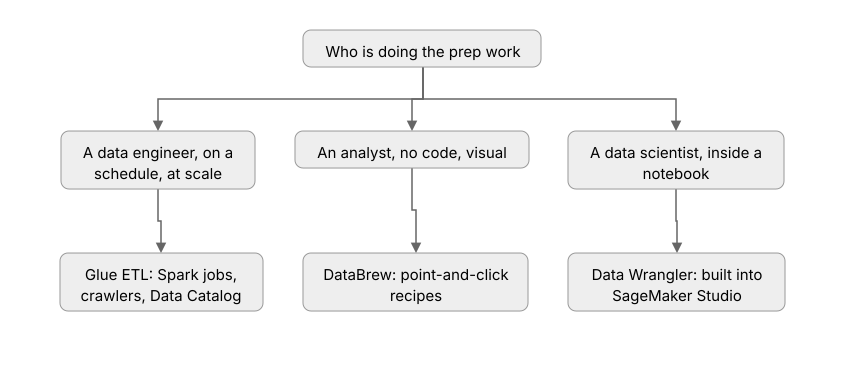
The prep-tool picker: the persona and the scale decide, Glue for engineers, DataBrew for analysts, Data Wrangler for notebook work.
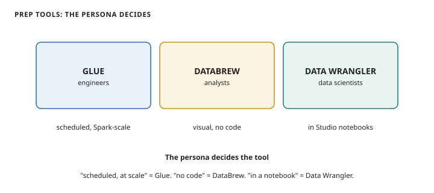
Prep-tool picker: Glue for data engineers at scale, DataBrew for analysts with no code, Data Wrangler for notebook work.
Read the three boxes. Glue is for engineers: scheduled, Spark-scale. DataBrew is for analysts: visual, no code. Data Wrangler is for data scientists in Studio notebooks.
A retail company loads nightly CSV dumps from its on-premises warehouse into S3, then an analyst without coding skills must clean and join them weekly. Which two services? The loader is DataSync (files into S3), and the cleaner is DataBrew (no-code). Glue would work too, but the words "analyst without coding skills" point to DataBrew.
Ladder 2: File formats and partitioning
Rung 1: The plainest picture. CSV and JSON are easy to read with your eyes, but they are slow and large at scale. Training reads the same data thousands of times, so the format matters more than it looks.
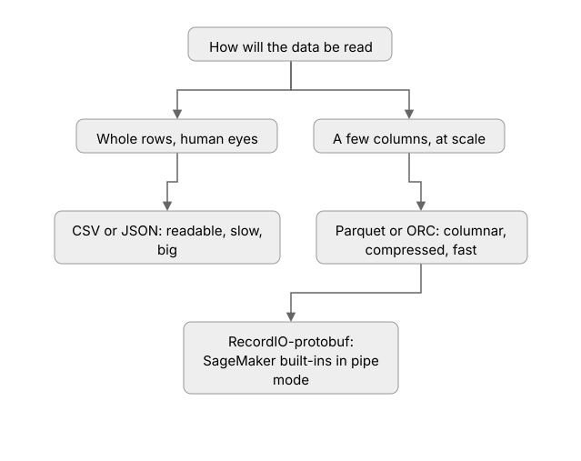
Format choice follows the read pattern: readable row formats for humans, columnar formats for training at scale.
Rung 2: Add one layer. Parquet and ORC are columnar: they store each column together, so a training job that needs 5 of 200 columns reads only those 5. They also compress well. Parquet is the exam's default answer for analytics and training data. RecordIO-protobuf is SageMaker's native training format: built-in algorithms can read it in pipe mode, streaming data straight into training without staging it on disk first.
Columnar wins at scale: Parquet for general training data, RecordIO-protobuf when SageMaker built-ins stream in pipe mode.
Rung 3: Exam grade. Partitioning splits one big dataset into folders by a key, usually date: s3://bucket/orders/year=2025/month=09/. Queries and training jobs then read only the folders they need. This is called partition pruning or predicate pushdown. Two exam traps: Athena (the serverless SQL query service over S3) charges by data scanned, so partitioning cuts the bill directly. And too many tiny partitions hurt, because every partition adds overhead. Aim for partitions around 100 MB to 1 GB each, not thousands of 1 KB files.
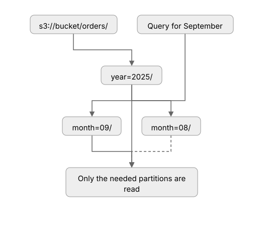
Hive-style partitioning: date keys become folders, and queries skip every folder outside the range they need.Worked example: the Athena bill
A 1 TB orders table serves a one-month query. Unpartitioned, Athena scans the full 1 TB. Partitioned by month, it scans about 85 GB (one twelfth). At $5 per TB scanned, the query drops from $5.00 to about $0.42. That is why the exam links partitioning to cost.
Ladder 3: Data quality, validation, and the imbalance problem
Rung 1: The plainest picture. Models learn whatever the data teaches, including the mistakes. A model trained on dirty data makes confident wrong predictions. Validate before you train: check the schema, check the ranges, count the nulls.
Rung 2: Add one layer. The most tested quality problem is class imbalance. Picture fraud detection: 1% fraud, 99% normal. A model that always says "not fraud" scores 99% accuracy and catches zero criminals. Three fixes exist. Fix the data: oversample the rare class, undersample the common class, or synthesize new rare examples (SMOTE, Synthetic Minority Over-sampling Technique). Fix the model: give the rare class a higher weight, so each fraud example counts more in training. Fix the yardstick: stop judging with accuracy and use precision-recall instead, which punishes the always-say-normal model.
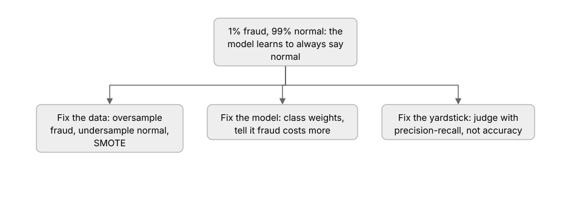
Class imbalance in one picture: the always-say-normal model looks great on accuracy, so fix the data, the weights, or the metric.
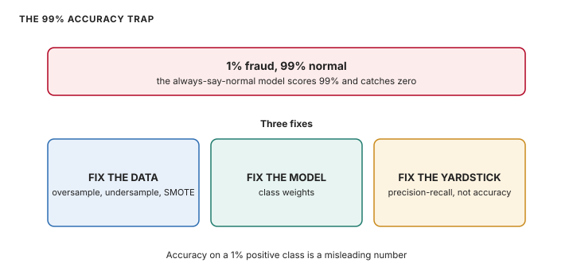
Class imbalance: the always-say-normal model scores 99 percent accuracy and catches zero fraud; fix the data, the model weights, or the metric.
Read top to bottom. On a 1% fraud dataset, always answering "not fraud" scores 99% and catches zero criminals. Three fixes: fix the data (resample or SMOTE), fix the model (class weights), or fix the yardstick (precision-recall instead of accuracy).
Rung 3: Exam grade. DataBrew and Glue Data Quality run validation rules (completeness, uniqueness, value ranges) on a schedule, so bad data never reaches training silently. For labeling, SageMaker Ground Truth manages human labelers. Three choices: a private workforce, a vendor workforce, or the public crowd. Active learning sends only the uncertain items to humans and auto-labels the rest. The exam repeats "label 100,000 images cheaply": that is Ground Truth with active learning, not a team of interns.
A fraud model shows 99% accuracy but the business says it catches nothing. What is wrong, and what do you change? The dataset is imbalanced, and accuracy is the wrong yardstick for it. Switch the metric to precision-recall or AUC-PR, and address the imbalance with resampling or class weights. Accuracy on a 1% fraud dataset is a misleading number.
A company streams click events from its website and needs them landed in S3 for nightly model training. An analyst with no coding background will clean the data. Which combination fits?
A)DMS for the stream, Glue for cleaning
B)Kinesis Data Streams plus Firehose into S3, DataBrew for cleaning
C)DataSync for the stream, Data Wrangler for cleaning
D)Kinesis Data Streams, Athena for cleaning
Correct: B. Streams mean Kinesis, Firehose lands streams in S3 with no code, and DataBrew is the no-code cleaning tool for analysts.
A is wrong: DMS replicates databases, it does not carry click streams; Glue is for engineers, not no-code analysts. C is wrong: DataSync moves files, not event streams. D is wrong: Athena queries data, it does not clean or transform it.
A training table has 400 columns but the model needs 12. Which storage choice keeps training I/O lowest?
Correct: C. Parquet stores columns together, so reading 12 of 400 columns skips the other 388. CSV and JSON are row formats: every row drags all 400 columns along.
A 3% positive class makes accuracy misleading. Which metric should the team report instead?
Correct: B. Precision and recall expose what accuracy hides: whether the rare class is actually being caught. A is wrong: rebalancing the sample for reporting hides the real operating point. C is wrong: training loss does not tell you per-class behavior. D is wrong: the diagonal is just accuracy restated.
Next: feature engineering: turning raw data into columns the model can learn from.
Numbers and limits
Volatile. Quotas, model IDs, and prices move. The prose below was checked against AWS documentation on 2026-09-28. Re-check any quota or price before exam day.
Rung 3: Exam grade. Partitioning splits one big dataset into folders by a key, usually date: s3://bucket/orders/year=2025/month=09/ .
Rung 2: Add one layer. The most tested quality problem is class imbalance. Picture fraud detection: 1% fraud, 99% normal.
Read top to bottom. On a 1% fraud dataset, always answering "not fraud" scores 99% and catches zero criminals.
Worked scenario
A retail company loads nightly CSV dumps from its on-premises warehouse into S3, then an analyst without coding skills must clean and join them weekly.
Exam trap
Rung 3: Exam grade. DataBrew and Glue Data Quality run validation rules (completeness, uniqueness, value ranges) on a schedule, so bad data never reaches training silently.
Outer layer Claim
Domain 1 continued · Feature engineering
The data is in and clean. Now turn it into features the model can learn from.
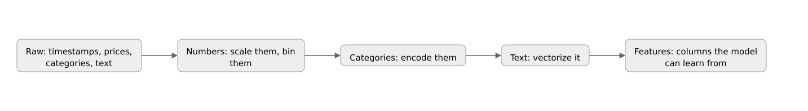
Feature engineering as a pipeline: raw columns go in, transformed features come out.
Feature engineering as a pipeline: raw columns go in, transformed features come out. Source: original figure for the AWS AIP-C01 Study Guide.
Feature engineering as a pipeline: raw columns go in, transformed features come out.
Mechanism
The data is in and clean. Now turn it into features the model can learn from.
Raw data is almost never model-ready. Feature engineering is the craft of turning it into columns the model can actually learn from. The exam treats it as the highest-payoff step in the pipeline: better features beat fancier algorithms.
Ladder 4: Turning raw data into features
Rung 1: The plainest picture. A feature is one input column the model learns from. A timestamp is raw data. Hour of day, day of week, and "is weekend" are features pulled out of it. The model cannot see patterns in raw data, so you hand it the patterns in feature form.
Rung 2: Add one layer. Numbers need scaling, because a model treats "income = 80,000" as far more important than "age = 40". Min-max scaling squeezes values into 0 to 1. Standardization centers them at mean 0 with spread 1. Tree models mostly do not care, but neural networks and KNN (k-nearest neighbors, which compares examples by distance) do. Categories need encoding: one-hot turns "red, green, blue" into three yes-or-no columns. Binning turns a continuous number into buckets, like age into "18-25, 26-35". Text becomes numbers with TF-IDF (term frequency-inverse document frequency, which weighs words by how distinctive they are) or embeddings (the AIF-C01 volume covered embeddings; here you use them as features).
Rung 3: Exam grade. Pick the encoding by the number of values. Few values (5 colors) means one-hot. Thousands of values (zip codes) means one-hot would create thousands of columns, so use embeddings or the hashing trick instead. Ordered values (small, medium, large) mean ordinal encoding: 1, 2, 3. And the most expensive trap: leakage. A feature built with information from the future (like "days until cancellation" computed after the fact) makes training look amazing and production fail. Build every feature only from data the model will have at prediction time.
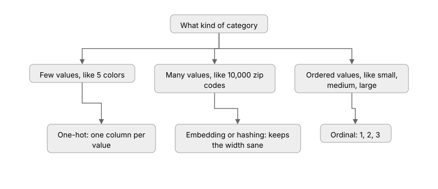
The encoding decision: cardinality decides, and ordered values get ordinal treatment.
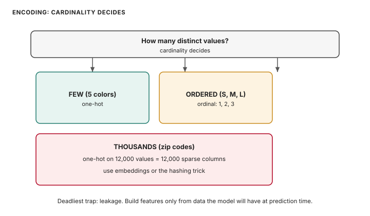
Encoding decision by cardinality: one-hot for few values, ordinal for ordered values, embeddings or hashing for thousands of values; never leak future data.
Start at the question. Few values: one-hot. Ordered values: ordinal 1, 2, 3. Thousands of values: embeddings or the hashing trick, because one-hot would make thousands of sparse columns. Never build a feature from future data.
A model uses zip code as a one-hot feature with 12,000 distinct values. Training is slow and accuracy is poor. What is the fix? One-hot on 12,000 values creates 12,000 sparse columns: slow and noisy. Replace it with an embedding, the hashing trick, or target encoding. This is the exam's most repeated encoding trap.
Ladder 5: SageMaker Feature Store
Rung 1: The plainest picture. Two teams often compute the same feature twice: once for training, once for serving. The two copies drift apart, and the model sees different numbers in production than it trained on. Feature Store is one shared home for features, so training and serving read the same values.
Rung 2: Add one layer. The store has two doors. The online store serves single feature lookups in milliseconds for real-time inference. The offline store keeps the full history in S3 for training jobs. You ingest once; both doors serve the same values.
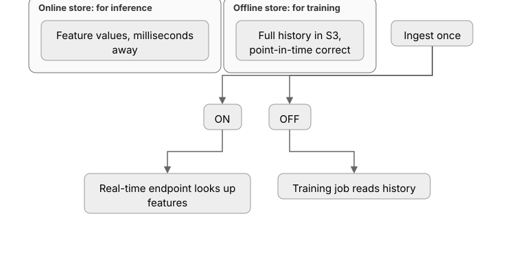
Feature Store: ingest once, serve training from the offline store and real-time inference from the online store.
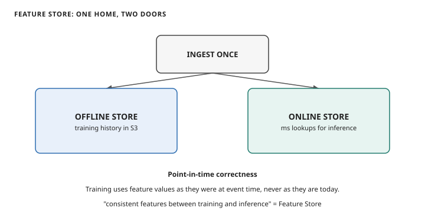
SageMaker Feature Store: ingest once, serve training from the offline store and real-time inference from the online store, with point-in-time correctness.
Read top to bottom. You ingest features once. The offline store serves training history from S3. The online store serves millisecond lookups for inference. Point-in-time correctness: training uses values as they were at event time, never as they are today.
Rung 3: Exam grade. The subtle exam point is point-in-time correctness. When you train on history, you must use the feature values as they were at event time, not as they are today. A customer's "account age" today is 5 years; at the time of last year's transaction it was 4. Training on today's value leaks the future. The offline store keeps every version with timestamps, so training queries get the values that were true then. When the exam says "consistent features between training and inference," the answer is Feature Store. When it says "as-of joins" or "no future leakage," that is the same answer.
# Feature Store ingestion with the SageMaker SDK.
# Plain-English walkthrough: define a group of related features,
# then push records in. Training and inference read the same values.
from sagemaker.feature_store.feature_group import FeatureGroup
# A feature group is one table of features, e.g. all customer features.
# record_identifier_name = the ID column (who), event_time_feature_name = when.
feature_group = FeatureGroup(
name="customer-features",
sagemaker_session=session,
)
# Create the group: online store ON for real-time lookup,
# offline store in S3 for training history.
feature_group.create(
s3_uri="s3://my-bucket/feature-store/",
record_identifier_name="customer_id",
event_time_feature_name="event_time",
role_arn=role,
enable_online_store=True, # milliseconds-fast lookup at inference
)
# Push one record. From here, training and serving share the same value.
feature_group.ingest(
data_frame=features_df, # pandas frame: one row per customer
max_workers=4,
wait=True,
)
A dataset has a "city" column with 8,000 distinct values. Which encoding keeps the model tractable?
A)One-hot encoding
B)Embeddings or the hashing trick
C)Drop the column entirely
D)Ordinal encoding by alphabetical order
Correct: B. High-cardinality categories need dense representations. One-hot would add 8,000 sparse columns.
A is wrong: 8,000 one-hot columns are slow, memory heavy, and noisy. C is wrong: dropping loses real signal; fix the encoding instead. D is wrong: alphabetical order is not a real ordering, so ordinal numbers would invent a fake ranking.
A model scores great in training but fails in production. Investigation shows training used "days_since_last_login" computed from the full history, including logins that happened after the prediction date. What is this?
Correct: C. The feature contains future information the model will not have at prediction time. Training looked great because the feature smuggled the answer into the input.
A is wrong: imbalance is about rare classes, not future data. B is wrong: drift happens after deployment when the world changes. D is wrong: underfitting is high error everywhere, not a train/prod gap.
A team needs the same "customer lifetime value" feature in both nightly training and a real-time fraud endpoint, with no drift between them. Which service?
Correct: A. Feature Store keeps one definition with an online door for inference and an offline door for training, point-in-time correct.
B is wrong: two separate jobs are exactly the drift problem. C is wrong: DynamoDB can serve lookups but gives no training history or point-in-time correctness. D is wrong: Data Wrangler prepares data interactively; it is not a serving store.
Next: model development: pick the algorithm, run the training job, tune it.
Numbers and limits
Volatile. Quotas, model IDs, and prices move. The prose below was checked against AWS documentation on 2026-09-28. Re-check any quota or price before exam day.
Rung 1: The plainest picture. A feature is one input column the model learns from. A timestamp is raw data.
Rung 2: Add one layer. The store has two doors. The online store serves single feature lookups in milliseconds for real-time inference.
Worked scenario
Each question in this section is the worked scenario. Read the last sentence of the stem first. That sentence is the constraint.
Exam trap
Raw data is almost never model-ready. Feature engineering is the craft of turning it into columns the model can actually learn from.
Rung 2: Add one layer. Numbers need scaling, because a model treats "income = 80,000" as far more important than "age = 40".
Rung 3: Exam grade. Pick the encoding by the number of values. Few values (5 colors) means one-hot.
Outer layer Claim
Domain 2 · ML model development (26%)
Features are ready. Now pick the algorithm, train, and tune.
The algorithm picker: the task decides, and XGBoost is the default for tabular problems.
The algorithm picker: the task decides, and XGBoost is the default for tabular problems. Source: original figure for the AWS AIP-C01 Study Guide.
The algorithm picker: the task decides, and XGBoost is the default for tabular problems.
Mechanism
Features are ready. Now pick the algorithm, train, and tune.
This domain is where models get built: pick the algorithm, run the training job, tune it, and evaluate it honestly. The exam tests judgment more than math. You need to know what each algorithm is for, how training jobs work, and how tuning searches.
Ladder 6: Picking a built-in algorithm
Rung 1: The plainest picture. SageMaker ships ready-made algorithms, so you do not have to write gradient descent yourself. For tabular data (rows and columns), one algorithm wins most comparisons: XGBoost. It builds decision trees one after another, each new tree fixing the mistakes of the previous ones.
Rung 2: Add one layer. The exam has a short list, and each entry has one job. Linear Learner is the fast linear baseline for classification and regression. KNN finds the most similar examples (good for simple similarity tasks). K-Means groups unlabeled rows into K clusters. Random Cut Forest spots anomalies: the odd ones out. LDA finds topics in text collections. Factorization Machines predict on sparse data like clicks and recommendations. DeepAR forecasts time series. BlazingText does fast Word2Vec (a classic word-embedding method) text classification. For vision there are built-in object detection and semantic segmentation.
Rung 3: Exam grade. The exam gives you a problem and expects the algorithm name. "Predict churn from a customer table" means XGBoost. "Find unusual network traffic" means Random Cut Forest. "Group customers with no labels" means K-Means. "Forecast demand" means DeepAR. "Recommend products from sparse click data" means Factorization Machines. If no built-in fits, bring your own container. SageMaker runs any Docker image as a training job. That is also how frameworks like PyTorch and TensorFlow run.
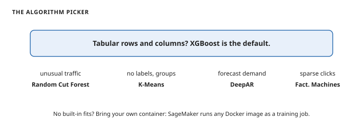
Algorithm picker: XGBoost for tabular data, Random Cut Forest for anomalies, K-Means for unlabeled groups, DeepAR for forecasting, Factorization Machines for sparse clicks.
Start at the top. Tabular data: XGBoost. Unusual traffic: Random Cut Forest. Unlabeled groups: K-Means. Demand forecasts: DeepAR. Sparse click data: Factorization Machines. No built-in fits: bring your own container.
1 Tabular classification or regression XGBoost first, Linear Learner for a fast linear baseline
2 Grouping with no labels K-Means
3 Anomaly detection Random Cut Forest
4 Time series forecasting DeepAR
5 Sparse recommendation or click data Factorization Machines
6 Text topics or fast text classification LDA or BlazingText
7 Nothing built-in fits bring your own container
Ladder 7: Training jobs, spot, and distributed training
Rung 1: The plainest picture. A SageMaker training job takes your script and starts managed instances. It copies data from S3, runs the script, and saves the trained model back to S3. You never SSH into a machine. You describe the job; SageMaker runs it.
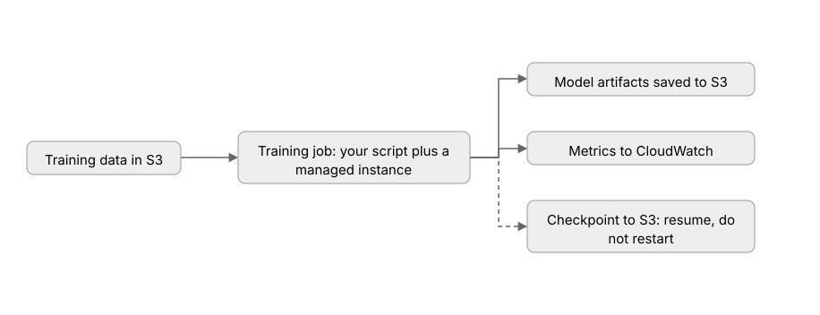
A training job: data flows in from S3, the script runs on managed instances, the model and metrics flow out.
Rung 2: Add one layer. AWS bills training by the instance-second, so cost control matters. Managed Spot Training uses spare EC2 (Elastic Compute Cloud: rented virtual machines) capacity at up to 90% off. The catch: AWS can interrupt your instances with two minutes' notice. The fix is checkpointing. The job saves its progress to S3 on a schedule. After an interruption it resumes from the checkpoint instead of restarting. Training metrics come from your script's logs. You print lines like validation:accuracy = 0.94. A regex (text-matching pattern) metric definition tells SageMaker to scrape those numbers into CloudWatch (AWS's metrics and logs service).
Cut Your AWS SageMaker Bill by 90% | MLA-C01 Exam Prep 2026 (Data & Dash) Click to load this video from YouTube
Watch: Cut Your AWS SageMaker Bill by 90% | MLA-C01 Exam Prep 2026, by Data and Dash (about 11 minutes). ID-verified. Shows managed spot training, S3 checkpointing so interruptions resume instead of restarting, lifecycle configs that auto-stop idle notebooks, and right-sizing instances. The cost habits here double as exam answers.
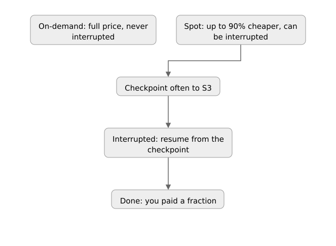
Spot training economics: cheap interrupted compute plus checkpoints equals full-price results at a fraction of the cost.
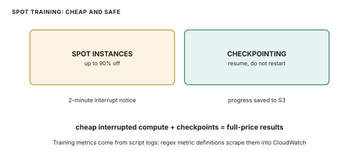
Spot training economics: cheap interrupted compute plus S3 checkpoints equals full-price results at a fraction of the cost.
Read the two boxes. Spot instances cost up to 90% less but AWS can reclaim them with two minutes notice. Checkpointing saves progress to S3, so the job resumes instead of restarting. Training metrics come from script logs scraped into CloudWatch.
# A SageMaker training job with managed spot + checkpointing.
# Walkthrough: the estimator names your script and instance type,
# spot opts into spare capacity, checkpoint_s3_uri is the resume point.
from sagemaker.xgboost import XGBoost
xgb = XGBoost(
entry_point="train.py", # your training script
source_dir="src", # folder holding the script
role=role,
instance_type="ml.m5.xlarge",
instance_count=1,
framework_version="1.7-1",
# Spot: up to 90% cheaper. max_wait must exceed max_run,
# giving the job time to wait out interruptions.
use_spot_instances=True,
max_run=3600,
max_wait=7200,
# Checkpoints: the script writes progress here; on interruption
# the replacement instance resumes from the latest checkpoint.
checkpoint_s3_uri="s3://my-bucket/checkpoints/",
# Scrape "validation:auc = 0.94" style lines into CloudWatch metrics.
metric_definitions=[
{"Name": "validation:auc", "Regex": "validation:auc=([0-9\\.]+)"},
],
)
xgb.fit({"train": "s3://my-bucket/train/", "validation": "s3://my-bucket/val/"})
Rung 3: Exam grade. When one GPU (graphics processing unit: the chip that trains neural networks fast) is too slow, training goes distributed. Data parallelism is the common case. Every GPU holds a full copy of the model. Each trains on a different slice of data, and the job averages the gradients together. SageMaker's data-parallel library (SMDDP) handles the averaging fast. Model parallelism is the rare case: the model itself is too big for one GPU, so it is split across them. The exam's default is data parallelism. Shrink the bill further with SageMaker Training Compiler (faster training, same result) and right-sized instances.
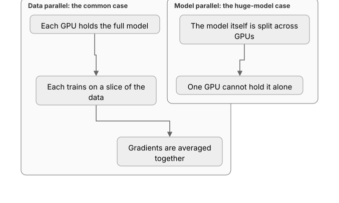
Data parallel vs model parallel: split the data in the common case, split the model only when one GPU cannot hold it.
A team trains a large language model that does not fit in a single GPU's memory. Which distributed strategy? Model parallelism: the model itself must be split across GPUs. Data parallelism copies the full model to each GPU, which fails here because the model does not fit.
Ladder 8: Hyperparameter tuning
Rung 1: The plainest picture. Parameters are what the model learns (the weights). Hyperparameters are what you set before training starts: the learning rate, the batch size, the number of trees, the number of epochs (full passes over the training data). One line to remember: the model learns parameters, you choose hyperparameters.
Rung 2: Add one layer. Tuning means trying many hyperparameter combinations and keeping the best. Grid search tries every combination on a list: thorough and expensive. Random search tries random combinations: cheaper and often just as good, because only a few hyperparameters usually matter. Bayesian optimization learns from past trials and picks the next combination smartly, balancing exploration of new areas with exploitation of good ones. That last one is SageMaker's default.
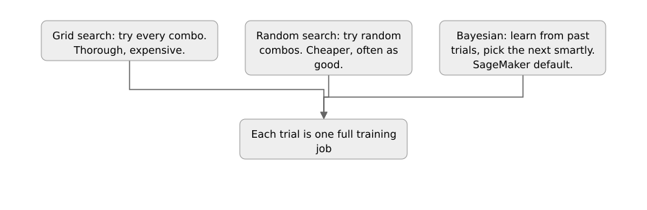
Three search strategies: grid is exhaustive, random is cheap, Bayesian learns as it goes.
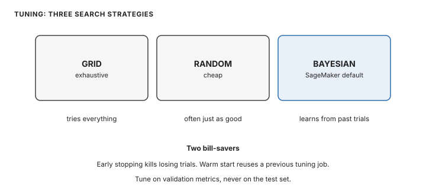
Hyperparameter search strategies: grid is exhaustive, random is cheap, Bayesian learns as it goes and is the SageMaker default; early stopping and warm start keep the bill low.
Read the three boxes. Grid tries everything: thorough and expensive. Random tries random picks: cheaper and often just as good. Bayesian learns from past trials: this is the SageMaker default. Early stopping kills losing trials. Warm start reuses a previous tuning job. Tune on validation, never on test.
Rung 3: Exam grade. SageMaker Automatic Model Tuning (AMT) runs the search for you. You define the hyperparameter ranges, the objective metric (like validation AUC, maximize), and the strategy. AMT launches many training jobs. Two features keep the bill low. Early stopping kills trials that are clearly losing. Warm start reuses results from a previous tuning job instead of starting cold. The tuning job returns the best model, and the exam expects you to know that tuning happens on validation metrics, never on the test set.
AWS Machine Learning: Tuning & Training at Scale (Nishanth Reddy) Click to load this video from YouTube
Watch: AWS Machine Learning: Tuning and Training at Scale, by Nishanth Reddy (about 10 minutes). ID-verified. Covers bagging vs boosting (the XGBoost intuition from Ladder 6). Covers AMT search strategies and when to use each. Then distributed training: data vs model parallelism, EFA networking, and the SageMaker libraries. Watch after Ladders 6 through 8.
Automatic Model Tuning: you set the ranges and the goal, it runs the trials, prunes the losers, and returns the winner.
# SageMaker Automatic Model Tuning with the SDK.
# Walkthrough: wrap an estimator, declare the ranges to search,
# name the objective metric, pick the strategy, and launch.
from sagemaker.tuner import HyperparameterTuner, IntegerParameter, ContinuousParameter
tuner = HyperparameterTuner(
estimator=xgb, # the estimator from Ladder 7
objective_metric_name="validation:auc", # what "best" means
objective_type="Maximize",
hyperparameter_ranges={
"max_depth": IntegerParameter(3, 10), # tree depth to try
"eta": ContinuousParameter(0.01, 0.3), # learning rate to try
"subsample": ContinuousParameter(0.5, 1.0), # row sample per tree
},
strategy="Bayesian", # smart search, the default
max_jobs=30, # total trials to run
max_parallel_jobs=3, # trials running at once
early_stopping_type="Auto", # kill clearly-losing trials
)
# Warm start: build on last week's tuning job instead of starting cold.
# tuner = tuner.transfer_learning_tuner(additional_parents={"parent-1": "last-job-name"})
tuner.fit({"train": "s3://my-bucket/train/", "validation": "s3://my-bucket/val/"})
best = tuner.best_training_job() # the winning trial
A company wants to predict customer churn from a table of account features. No labels are missing and the data is tabular. Which built-in algorithm does the exam expect?
A)K-Means
B)XGBoost
C)DeepAR
D)BlazingText
Correct: B. XGBoost is the default pick for tabular classification and regression.
A is wrong: K-Means clusters unlabeled data; churn labels exist here. C is wrong: DeepAR forecasts time series. D is wrong: BlazingText classifies text, not tables.
A training job must finish cheaply and can tolerate interruptions. Which setup fits?
Correct: B. Spot gives up to 90% off; checkpoints let the job resume after interruption instead of restarting.
A is wrong: full price with no resume story. C is wrong: faster but still full price, and speed was not the ask. D is wrong: parallel on-demand doubles the bill.
A tuning job should explore hyperparameter space efficiently, learning from earlier trials. Which strategy?
Correct: C. Bayesian optimization builds a model of past trial results and picks the next combination smartly. It is SageMaker AMT's default.
A is wrong: grid is exhaustive and expensive. B is wrong: random is cheap but learns nothing from past trials. D is wrong: manual search does not scale and is not a strategy AMT offers.
Next: honest evaluation: the wrong metric picks the wrong model.
Numbers and limits
Volatile. Quotas, model IDs, and prices move. The prose below was checked against AWS documentation on 2026-09-28. Re-check any quota or price before exam day.
Rung 2: Add one layer. AWS bills training by the instance-second, so cost control matters.
Cut Your AWS SageMaker Bill by 90% | MLA-C01 Exam Prep 2026 (Data & Dash) Click to load this video from YouTube
Watch: Cut Your AWS SageMaker Bill by 90% | MLA-C01 Exam Prep 2026, by Data and Dash (about 11 minutes).
Worked scenario
Each question in this section is the worked scenario. Read the last sentence of the stem first. That sentence is the constraint.
Exam trap
Rung 1: The plainest picture. SageMaker ships ready-made algorithms, so you do not have to write gradient descent yourself.
Rung 1: The plainest picture. A SageMaker training job takes your script and starts managed instances.
Read the three boxes. Grid tries everything: thorough and expensive. Random tries random picks: cheaper and often just as good.
Outer layer Claim
Domain 2 continued · Evaluating honestly
You trained and tuned the model. Now grade it honestly: the wrong metric picks the wrong model.
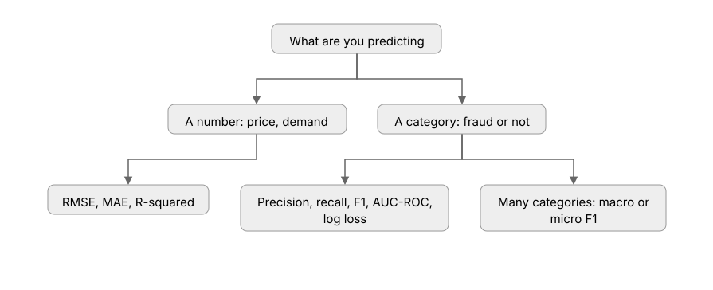
The metric picker: the prediction type decides. Categories get confusion-matrix metrics; numbers get error metrics.
The metric picker: the prediction type decides. Categories get confusion-matrix metrics; numbers get error metrics. Source: original figure for the AWS AIP-C01 Study Guide.
The metric picker: the prediction type decides.
Categories get confusion-matrix metrics; numbers get error metrics.
Mechanism
You trained and tuned the model. Now grade it honestly: the wrong metric picks the wrong model.
Tuning gives you a model that looks good. Evaluation asks whether it actually is. The exam cares about this because the wrong metric picks the wrong model. Every trap in this section follows the same pattern: a number that flatters and a question that asks what the number hides.
Ladder 9: Evaluation metrics and the confusion matrix
Rung 1: The plainest picture. You cannot grade a model on the test it studied for. Training data is the practice exam. The grade comes from data the model has never seen. You compute every metric below on that unseen data, or it means nothing.
Rung 2: Add one layer. Classification asks yes-or-no questions (fraud or not). Every prediction lands in one of four boxes. True positives: fraud caught. True negatives: clean transactions left alone. False positives: innocent flagged. False negatives: fraud missed. Those four boxes are the confusion matrix, and every classification metric is arithmetic on them.
The four classification formulas. The symbols, from the four boxes above: TP = fraud caught, FP = innocent flagged, TN = clean left alone, FN = fraud missed.
accuracy = (TP + TN) / everything
precision = TP / (TP + FP)
recall = TP / (TP + FN)
F1 = 2 x precision x recall / (precision + recall)
The exam's favorite tradeoff is here: tightening the alarm threshold raises precision but drops recall, and loosening it does the reverse. F1 is the harmonic mean of the two, a single number that punishes a model that games one side. AUC-ROC (AUC is area under the curve) measures how well the model ranks positives above negatives across every threshold. 1.0 is perfect, 0.5 is a coin flip.
Regression asks how-much questions (price, demand). Errors are the gaps between predicted and actual. The symbols: e = predicted minus actual, n = number of examples.
MAE = (|e1| + |e2| + ... + |en|) / n
RMSE = sqrt((e12 + e22 + ... + en2) / n)
MAE (mean absolute error) is the average gap in plain units. RMSE (root mean squared error) is the square root of the average squared gap. It punishes big misses harder than small ones: one wild outlier inflates RMSE far more than MAE.
Worked example: reading the four boxes, step by step
Read the boxes. A fraud model scores 100 transactions: TP = 8, FP = 5, FN = 2, TN = 85.
Precision. 8 / (8 + 5) = 8 / 13 = 0.62: only six in ten alarms are real fraud.
Recall. 8 / (8 + 2) = 8 / 10 = 0.80: two frauds in ten slip through.
F1. 2 x 0.62 x 0.80 / (0.62 + 0.80) = 0.70.
The lesson. The 0.93 accuracy flattered; precision and recall told the truth. In fraud, a missed case costs far more than a false alarm, so the team optimizes recall first.
Rung 3: Exam grade. The exam gives you a business cost and expects the metric. "Missing a tumor is worse than a false alarm" means optimize recall. "Every false alarm wastes an expensive manual review" means optimize precision. "Classes are imbalanced" means distrust accuracy and reach for AUC-PR (area under the precision-recall curve), which stays honest when negatives dominate. Multi-class problems report macro F1 (each class counts equally) or micro F1 (each example counts equally). Imbalanced multi-class wants macro. And the tuning rule from Ladder 8 still holds: the test set judges once, at the end. Tune on validation, report on test.
A medical screening model must never miss a sick patient, and false alarms are cheap. Which metric guides tuning? Recall. The cost of a false negative (a missed patient) dwarfs the cost of a false positive. Tune the threshold until recall is near perfect, then accept whatever precision results.
Ladder 10: Overfitting, underfitting, splits, and cross-validation
Rung 1: The plainest picture. An overfit model is a student who memorized the practice test and freezes on new questions. An underfit model never learned the material at all. The picture below shows both: the smooth black curve generalizes, the wiggly green curve memorized every dot including the noise.
Rung 2: Add one layer. You spot the difference by comparing two errors. Training error is the score on the practice test. Validation error is the score on fresh data. Overfitting: training error tiny, validation error much bigger. Underfitting: both errors big. The fixes are opposite, so diagnose first. Overfit fixes: more training data, regularization (penalize big weights), dropout (randomly silence neurons during training), early stopping (quit when validation error starts rising), or a simpler model. Underfit fixes: richer features, a bigger model, train longer, less regularization. SageMaker Debugger (Ladder 11) can catch overfitting and stalled training while the job still runs.
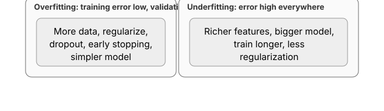
Diagnose first, fix second: the train-versus-validation gap tells you which problem you have, and the fixes are opposites.
Rung 3: Exam grade. The data gets split three ways. Training learns the weights (60 to 80%). Validation tunes the knobs and picks the winner (10 to 20%). Test judges once, at the very end (10 to 20%), and never trains anything. Touching the test set during tuning leaks information and the exam punishes it: a question that tunes on test data is already wrong. When data is scarce, k-fold cross-validation rotates the validation slice. Split the data into K folds. Train on K-1, validate on the held-out fold, repeat K times, average the scores. The average is a steadier read than any single split. Stratified k-fold keeps each fold's class mix matching the whole, which matters for imbalanced data.
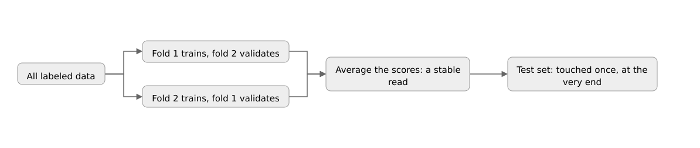
K-fold cross-validation: rotate the validation slice, average the scores, and save the test set for one final judgment.
A model scores 99% on training but 71% on validation. What is wrong, and what are two fixes? Overfitting: the gap between training and validation error is the diagnosis. Fix with regularization, early stopping, dropout, more data, or a simpler model. Tuning on the validation set more will not help; that is the test set's job later.
A fraud model reports 99% accuracy on a dataset with 1% fraud, but precision is 0.45 and recall is 0.30. Which statement is true?
A)The model is excellent; accuracy near 100% proves it
B)The model misses 70% of real fraud; accuracy is misleading here
C)The model is underfitting and needs fewer features
D)The F1 score must be above 0.9
Correct: B. Recall 0.30 means 7 in 10 frauds slip through. Accuracy is the misleading number from Ladder 3: the always-say-normal model scores 99% too.
A is wrong: accuracy on a 1% positive class hides everything. C is wrong: nothing here says both errors are high; the issue is the metric, not model capacity. D is wrong: F1 with precision 0.45 and recall 0.30 is about 0.36.
A model trains to 98% accuracy but validates at 72%. Which two actions help? (Choose two.)
Correct: A and D. The train-validation gap is overfitting: constrain the model (regularization, early stopping) or feed it more data.
B is wrong: a bigger model trained longer memorizes harder. C is wrong: you touch the test set once, at the end. Tuning on it leaks the answer.
A team has 2,000 labeled rows and needs a stable performance estimate before the final test. Which approach?
Correct: C. K-fold averages out split luck; stratification keeps the class mix honest; the test set stays sealed until the end.
A is wrong: training accuracy measures memorization. B is wrong: one small validation slice is noisy, and repeated tuning on it overfits the slice. D is wrong: a new metric on training data is still training data.
Next: the SageMaker workflow tools: pipelines, registry, experiments, Clarify, Debugger.
Numbers and limits
Volatile. Quotas, model IDs, and prices move. The prose below was checked against AWS documentation on 2026-09-28. Re-check any quota or price before exam day.
A model scores 99% on training but 71% on validation. What is wrong, and what are two fixes?
Worked scenario
Each question in this section is the worked scenario. Read the last sentence of the stem first. That sentence is the constraint.
Exam trap
Tuning gives you a model that looks good. Evaluation asks whether it actually is. The exam cares about this because the wrong metric picks the wrong model.
Rung 1: The plainest picture. You cannot grade a model on the test it studied for. Training data is the practice exam.
A medical screening model must never miss a sick patient, and false alarms are cheap. Which metric guides tuning?
Outer layer Claim
Domain 2 continued · The SageMaker workflow tools
One model works in a notebook. Now the machinery that trains models as a team, with auditors asking questions.
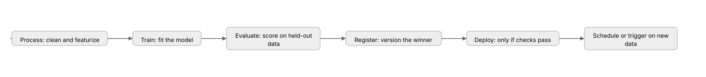
The SageMaker MLOps loop: clean, train, evaluate, register the winner, deploy only approved versions, and repeat on new data.
The SageMaker MLOps loop: clean, train, evaluate, register the winner, deploy only approved versions, and repeat on new data. Source: original figure for the AWS AIP-C01 Study Guide.
The SageMaker MLOps loop: clean, train, evaluate, register the winner, deploy only approved versions, and repeat on new data.
Mechanism
One model works in a notebook. Now the machinery that trains models as a team, with auditors asking questions.
Training one model is a notebook. Training models as a team, for months, with auditors asking questions, needs machinery. Track every experiment. Version every model. Gate every promotion. Watch training while it runs. Check for bias before anyone ships.
Ladder 11: Pipelines, Model Registry, Experiments, Clarify, Debugger
Rung 1: The plainest picture. Five tools, five jobs. Experiments remembers what you tried. The Model Registry versions the winners and gates promotion. Pipelines chains the steps into a repeatable pipeline. Clarify checks for bias and explains predictions. Debugger watches training live and shouts when something breaks.
Rung 2: Add one layer. Experiments logs every training run: hyperparameters, metrics, data, code version. When a teammate asks "which run made this model," the answer is one query, not a search through notebooks. The Model Registry collects model versions into groups. Each version carries an approval status: PendingManualApproval, Approved, or Rejected. Only approved versions deploy. The pipeline below is the exam's mental model of MLOps: process, train, evaluate, register, deploy, and loop back on new data.
# Register a trained model and gate it for human approval.
# Walkthrough: estimator.register() snapshots the model into a versioned
# group. Nothing deploys until a human flips the status to Approved.
model_package = xgb.register(
content_types=["text/csv"], # what the model accepts
response_types=["text/csv"], # what it returns
model_package_group_name="churn-models",
approval_status="PendingManualApproval", # the gate: no auto-deploy
)
# A reviewer later approves it (console, CLI, or SDK):
# approval_status -> "Approved". Only then may the pipeline deploy it.
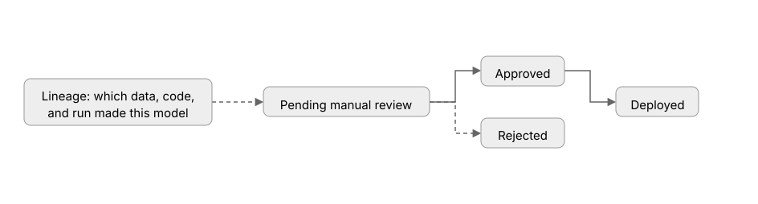
The approval gate: versions move from pending review to approved to deployed. Rejected versions never reach production, and lineage records exactly what built each one.
Rung 3: Exam grade. Clarify runs in two places. Before training it scans the data for bias: class imbalance and label skew across groups (does one group get the positive label far less often). After training it scans the predictions for the same skews. It explains individual predictions with SHAP (SHapley Additive exPlanations) values: how much each feature pushed this one prediction up or down.
Debugger watches training while it runs. Debugger hooks into a live training job. Built-in rules watch for vanishing gradients (gradients shrinking to zero in deep layers, so early layers stop learning), overfitting, stalled loss, and dead neurons. They can stop a doomed job early instead of wasting the budget. Its profiler finds the slow step: data loading, a GPU bottleneck, a straggler. Lineage tracking connects them. Every model version records the training data, the code, the hyperparameters, and the run that produced it. That is what auditors and the exam both ask for.
Clarify in two places: bias in the data before training, bias in the predictions after, with SHAP explaining each individual decision.
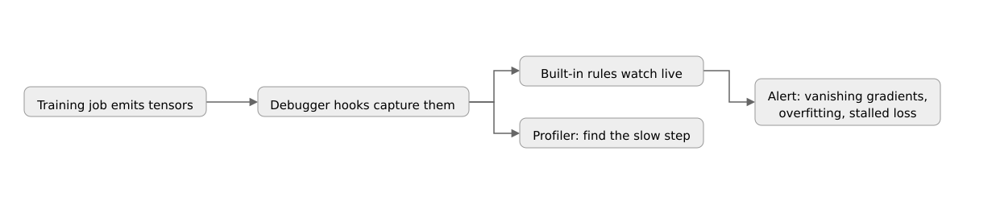
Debugger watches training live: hooks capture tensors, built-in rules flag trouble, and the profiler finds the bottleneck.
A bank must prove its loan model does not discriminate, and explain individual rejections to regulators. Which SageMaker tool, and when does it run? SageMaker Clarify. Pre-training it measures bias in the data; post-training it measures bias in predictions and produces SHAP explanations per decision. Ground Truth labels data, it does not audit fairness.
Next: deployment: getting predictions out cheaply and safely, plus the retraining machinery.
Numbers and limits
Volatile. Quotas, model IDs, and prices move. The prose below was checked against AWS documentation on 2026-09-28. Re-check any quota or price before exam day.
This section states no service quota. Do not memorize a number the text does not give you.
Worked scenario
A bank must prove its loan model does not discriminate, and explain individual rejections to regulators.
Exam trap
Exam trap: a real service used for the wrong job, or a heavier ladder rung than the stem requires. Match the verb in the stem — cite, act, block, cheapen, or measure — to one mechanism here.
Outer layer Claim
Domain 3 · Deployment and orchestration of ML workflows (22%)
The model is built and gated. Now get predictions to the people and systems that need them.
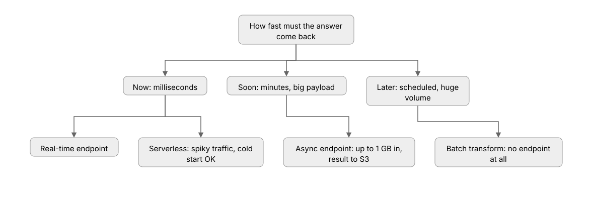
The endpoint picker: the required response time decides. Milliseconds means real-time or serverless, minutes means async, scheduled bulk means batch transform.
The endpoint picker: the required response time decides. Milliseconds means real-time or serverless, minutes means async, scheduled bulk means batch transform. Source: original figure for the AWS AIP-C01 Study Guide.
The endpoint picker: the required response time decides.
Milliseconds means real-time or serverless, minutes means async, scheduled bulk means batch transform.
Mechanism
The model is built and gated. Now get predictions to the people and systems that need them.
This domain is about getting predictions to the people and systems that need them, cheaply and safely. It is also about the machinery that retrains and redeploys without human babysitting.
Ladder 12: The four ways to serve predictions
Rung 1: The plainest picture. Inference is just asking the trained model for answers. AWS offers four doors, and the only question is how fast the answer must come back.
Rung 2: Add one layer. A real-time endpoint stays warm and answers in milliseconds: chatbots, fraud checks, recommendations. You pay for every hour it runs, idle or not. Serverless inference also answers fast, but it scales from zero and you pay per request. It fits spiky or occasional traffic. Expect a cold-start delay on the first call. Asynchronous inference takes requests into a queue and processes them in the background. It writes results to S3 with an SNS (Simple Notification Service, the push-notification service) notification. Payloads up to 1 GB, minutes of processing, no waiting client. Batch transform has no endpoint at all. It scores a whole S3 dataset in one job, on a schedule or on demand. That makes it the cheapest option for offline scoring.
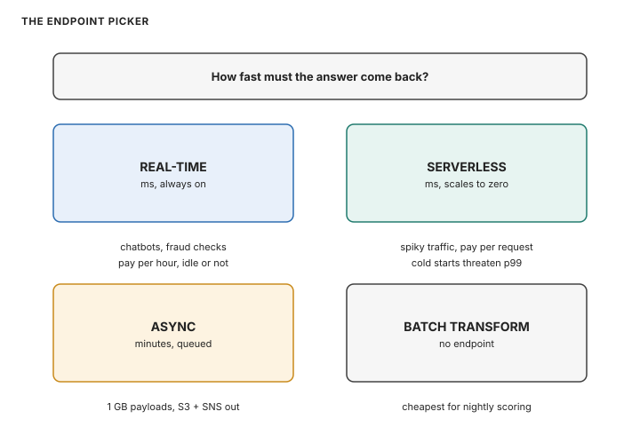
Endpoint picker by latency: real-time for milliseconds always on, serverless for spiky pay-per-request, async for minutes-long queued jobs, batch transform for scheduled bulk scoring with no endpoint.
Start at the question. Milliseconds, always on: real-time. Milliseconds, spiky: serverless, but watch cold starts. Minutes, queued: async with up to 1 GB payloads. Scheduled bulk: batch transform, which has no endpoint and is the cheapest.
Rung 3: Exam grade. The exam's deciding words: "always on, lowest latency" means real-time. "Infrequent, unpredictable, pay per use" means serverless. "Large payloads, long processing, no client waiting" means async. "Nightly scoring of a full dataset, cheapest" means batch transform. Two traps: batch transform needs no endpoint, so any answer that "scales the endpoint" for a nightly batch job is wrong. And serverless inference has cold starts, so "consistent single-digit-millisecond latency" rules it out.
1 Answer now, always on Real-time endpoint (persistent instances, you pay per hour)
2 Answer now, spiky or rare traffic Serverless inference (scales to zero, pay per request, cold starts)
3 Answer in minutes, big payload, nobody waiting Asynchronous inference (queue, S3 in, S3 out, SNS on done)
4 Score a whole dataset on a schedule Batch transform (no endpoint, cheapest per prediction)
A company scores 50 million product images every night at 2 AM. Requests arrive in one burst and nobody waits for answers. Which inference option is cheapest? Batch transform. It starts for the job, scores the S3 dataset, and shuts down. A real-time endpoint would sit idle 20 hours a day wasting money. Async would work but costs more per prediction than a batch job.
Ladder 13: Multi-model endpoints, auto-scaling, and safe rollouts
Rung 1: The plainest picture. One endpoint usually serves one model. That gets expensive when you have fifty small models. Multi-model endpoints share one fleet across many models, loading each into memory only when a request needs it.
Rung 2: Add one layer. Two sharing flavors exist, and the exam tests the difference on purpose. A multi-model endpoint hosts many models behind one endpoint, all using the same serving container (same framework). A multi-container endpoint hosts different containers on the same endpoint and can call them in sequence or directly: different frameworks, different preprocessing per model. For scaling, Application Auto Scaling adds and removes instances behind a real-time endpoint on a target-tracking policy, usually invocations per instance. The endpoint scales up under load and back down after, so you pay for the traffic you actually get.
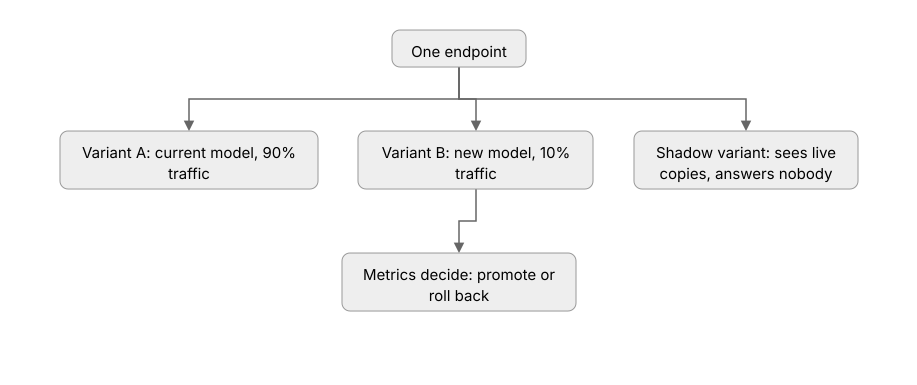
Safe rollouts on one endpoint: production variants split traffic by weight, a shadow variant watches without answering, and metrics pick the winner.
Rung 3: Exam grade. Production variants are how A/B tests work on SageMaker: one endpoint, two model variants, traffic split by weight (90/10 to start). Shift the weights as the new model proves itself, or roll back by shifting them back. A shadow variant goes further. It receives a live copy of every request but its answers go nowhere. You can measure a risky model against production with zero user impact.
Safe first deployments. For brand-new deployments, deployment guardrails on endpoint updates offer blue/green (swap the whole fleet), canary (shift a small percent of traffic first), and linear (shift traffic in steady steps). SageMaker Inference Recommender load-tests your model on candidate instance types. It recommends the cheapest one that meets your latency target. That answers "which instance type" questions on the exam.
# An endpoint with two production variants for an A/B test.
# Walkthrough: each variant names a model and its traffic share.
# Weights always sum to 1. Shift them to roll out or roll back.
sm.create_endpoint_config(
EndpointConfigName="churn-config",
ProductionVariants=[
{
"VariantName": "current",
"ModelName": "churn-v3",
"InitialInstanceCount": 2,
"InstanceType": "ml.m5.xlarge",
"InitialVariantWeight": 0.9, # 90% of traffic
},
{
"VariantName": "candidate",
"ModelName": "churn-v4",
"InitialInstanceCount": 1,
"InstanceType": "ml.m5.xlarge",
"InitialVariantWeight": 0.1, # 10% of traffic
},
],
)
A team wants to validate a new model on 10% of live traffic with minimal operational overhead, and roll back instantly if metrics dip. Which approach? Production variants on the existing endpoint: add the new model as a second variant with weight 0.1. No new endpoint, no load balancer rules. Rolling back is one weight update. A separate endpoint plus ALB (Application Load Balancer) routing works but is exactly the overhead the question says to avoid.
Ladder 14: MLOps - CI/CD, orchestration, and lineage
Rung 1: The plainest picture. Models go stale (Ladder 15 explains why). MLOps is the workflow that retrains, re-evaluates, and redeploys on a schedule or when new data arrives, with a human gate before production.
Rung 2: Add one layer. SageMaker Pipelines defines the workflow as code: a DAG (directed acyclic graph: steps with no loops) of steps (process, train, tune, evaluate, register, deploy) that runs in Studio or on a trigger. The pipeline from Ladder 11 is this workflow. Triggers come from EventBridge (AWS's event bus for schedules and events) schedules ("retrain every Sunday") or S3 events ("new data landed, retrain now"). For the wider CI/CD (continuous integration and continuous delivery) story, CodePipeline and CodeBuild (AWS's build-and-deploy services) test and deploy the pipeline code itself, the same way they handle application code.
Beyond SageMaker. Step Functions (the workflow service for multi-service flows) can orchestrate when the workflow reaches beyond SageMaker, like calling Lambda (AWS's serverless code runner) or waiting for a human approval task.
Rung 3: Exam grade. The exam tests the full loop, not the pieces. A new data batch lands in S3. An S3 event triggers the pipeline. The pipeline retrains, evaluates against the current champion, and registers the challenger as PendingManualApproval. A human approves. The pipeline updates the endpoint, shifting variant weights. Lineage tracking records every link: which data, which code, which run, which approval produced the model now serving. When a question asks "which combination gives automated retraining with human approval," the answer is Pipelines plus the Model Registry approval gate.
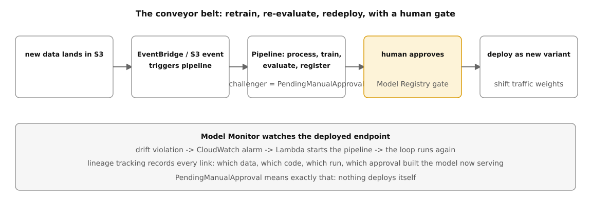
MLOps retraining loop: new data in S3 triggers a pipeline that processes, trains, evaluates, and registers a challenger stuck at PendingManualApproval; a human approves, the new variant deploys, Model Monitor watches, and drift restarts the loop
# A SageMaker Pipeline: the retraining belt as code.
# Walkthrough: list the steps in order, upsert the pipeline definition,
# then start it on a schedule or an S3 event trigger.
from sagemaker.workflow.pipeline import Pipeline
pipeline = Pipeline(
name="churn-retrain-pipeline",
steps=[
processing_step, # clean + featurize the new data
training_step, # fit the challenger model
evaluation_step, # score it against the champion
register_step, # register as PendingManualApproval
],
sagemaker_session=session,
)
pipeline.upsert(role_arn=role) # create or update the definition
pipeline.start() # run now; EventBridge or S3 events run it later
A mobile app needs fraud scores in under 100 ms, 24/7, with steady traffic. Which inference option?
A)Batch transform on a nightly schedule
B)Real-time endpoint
C)Asynchronous inference
D)Serverless inference
Correct: B. Always-on traffic with a hard latency budget is the real-time endpoint's job.
A is wrong: batch scores datasets offline, it cannot answer live requests. C is wrong: async queues requests and answers in minutes. D is wrong: serverless fits spiky traffic, and cold starts threaten the 100 ms budget.
A team runs 40 small models with bursty traffic and wants one endpoint to minimize cost. Which fits?
Correct: B. Multi-model endpoints share one fleet across many models on the same container, loading each on demand.
A and D are wrong: 40 always-on endpoints is the expensive answer. C is wrong: batch transform is for offline scoring, not serving live requests.
A new model version must serve 5% of live traffic while the team watches error rates, with instant rollback. Which mechanism?
Correct: B. Variant weights split live traffic precisely; rollback is one weight update.
A is wrong: DNS switching is coarse and slow. C is wrong: blue/green replaces the fleet rather than splitting a small traffic share. D is wrong: shadow mode sees copies but answers nobody, so it cannot validate on live user outcomes.
Which combination gives automated retraining on new data with a human approval before production?
Correct: B. Pipelines automates the retrain loop; the registry's PendingManualApproval status is the human gate.
A is wrong: cron plus manual steps is not a pipeline and has no approval record. C is wrong: labeling and bias tools, not orchestration. D is wrong: Debugger watches training health, it does not orchestrate retraining.
Next: monitoring: noticing the decay, responding, and locking it all down.
Numbers and limits
Volatile. Quotas, model IDs, and prices move. The prose below was checked against AWS documentation on 2026-09-28. Re-check any quota or price before exam day.
Rung 2: Add one layer. A real-time endpoint stays warm and answers in milliseconds: chatbots, fraud checks, recommendations.
Start at the question. Milliseconds, always on: real-time. Milliseconds, spiky: serverless, but watch cold starts.
Rung 3: Exam grade. The exam's deciding words: "always on, lowest latency" means real-time.
Worked scenario
A company scores 50 million product images every night at 2 AM. Requests arrive in one burst and nobody waits for answers.
Exam trap
Exam trap: a real service used for the wrong job, or a heavier ladder rung than the stem requires. Match the verb in the stem — cite, act, block, cheapen, or measure — to one mechanism here.
Outer layer Claim
Domain 4 · Monitoring, maintenance, and security (24%)
Predictions are serving. Now watch the world change around the model.
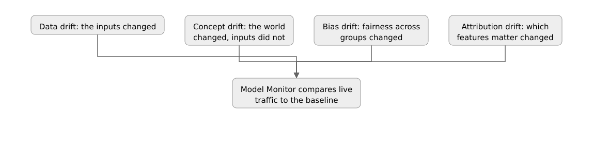
The four drifts Model Monitor watches: what the inputs look like, what the world means, who gets fair outcomes, and which features the model leans on.
The four drifts Model Monitor watches. What the inputs look like, what the world means, who gets fair outcomes, and which features the model leans on. Source: original figure for the AWS AIP-C01 Study Guide.
The four drifts Model Monitor watches: what the inputs look like, what the world means, who gets fair outcomes, and which features the model leans on.
Mechanism
Predictions are serving. Now watch the world change around the model.
Deployment is not the finish line. The world keeps moving under the model: customer behavior shifts, data feeds break, fairness erodes. This domain is about noticing the decay, responding to it, and locking the whole system down.
Ladder 15: Model Monitor and the three drifts
Rung 1: The plainest picture. A model is a snapshot of the world on training day. When the world changes, the snapshot goes stale and predictions quietly degrade. Monitoring means comparing live traffic against the training baseline and raising an alarm when they diverge.
Rung 2: Add one layer. Three things can drift. Data drift: the inputs change shape. A fraud model trained on desktop purchases starts seeing mostly mobile traffic. The model still runs, but on data it barely knows. Concept drift: the world changes while the inputs look the same. Spending patterns shift in a recession; the same features now mean different things. Bias drift: fairness across groups changes. Approval rates for one group slide over time. Model Monitor also watches feature attribution drift. Which features drive predictions can shift even when accuracy looks fine. That is an early warning that the model's reasoning changed.
Rung 3: Exam grade. The machinery works in four steps.
Baseline. Model Monitor captures a baseline from the training data (statistics and constraints).
Capture and compare. On an hourly schedule it captures live endpoint traffic into S3 and compares it against the baseline.
Surface violations. Violations surface as CloudWatch metrics.
Alarm and act. A CloudWatch alarm on those metrics fires an SNS notification or a Lambda that kicks off retraining.
The exam's deciding details come in three parts. Data-quality monitoring needs only the baseline. Model-quality monitoring needs ground truth merged with predictions (labels arrive late, so you join them in S3 on a schedule). Bias monitoring reuses Clarify metrics on a schedule. The response ladder never changes: detect the violation, alert, retrain through the pipeline, gate through the registry, deploy as a new variant.
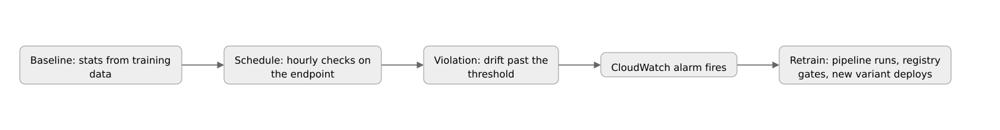
The monitoring loop: baseline, scheduled capture, violation, alarm, and the retraining belt from Ladder 14 closes the circle.
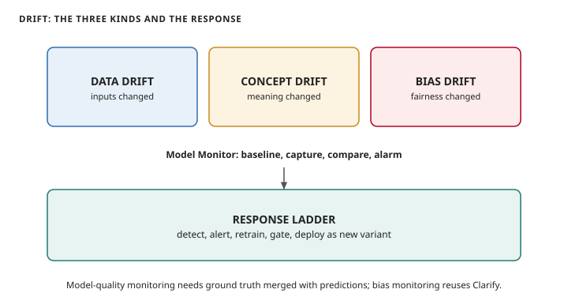
The three drifts and the response ladder: detect the violation, alert, retrain through the pipeline, gate through the registry, deploy as a new variant.
Read the three boxes first. Data drift changes the inputs. Concept drift changes what the inputs mean. Bias drift changes fairness across groups. Model Monitor baselines, captures, compares, and alarms. The response ladder never changes: detect, alert, retrain, gate, deploy as a new variant.
An endpoint's accuracy is falling, but the input feature distributions look unchanged. What kind of drift is this, and what does the fix require? Concept drift: the world changed, not the inputs. Retraining needs fresh labeled data, because the old labels describe a world that no longer exists. Data-drift tooling alone will not catch it; only ground-truth comparison reveals it.
Ladder 16: Locking down ML - IAM, VPC, KMS
Rung 1: The plainest picture. A model is a business asset and training data is often sensitive. The same AWS security tools from the AIP-C01 volumes apply here. IAM decides who can do what. VPC decides what the network can reach. KMS decides who can read the bytes.
Rung 2: Add one layer. IAM: every training job, endpoint, and pipeline step runs under an execution role. Least privilege means the role can read its input bucket and write its output bucket, nothing more. VPC: training jobs and endpoints can run in network isolation, with no internet access at all. They reach S3 through VPC endpoints (gateway endpoints for S3, interface endpoints for the SageMaker API and CloudWatch) instead of a NAT (network address translation) gateway, which the exam prefers as the cheaper and more private answer. KMS: encrypt the S3 buckets, the EBS volumes attached to training instances, and the model artifacts themselves, each with a customer-managed key. Inter-container traffic encryption covers data moving between the containers of a distributed job.
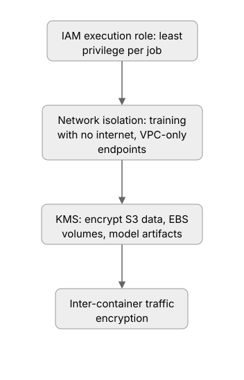
The ML security stack: least-privilege roles, no internet in the data plane, private paths to S3, and KMS encryption on every byte at rest.
Rung 3: Exam grade. The exam tests these as scenario constraints. "Training must not access the internet" means enable network isolation on the training job, not an IAM policy. "Model artifacts must be encrypted with a company key" means a KMS key on the output S3 location and the EBS volumes. "Traffic between training containers must be encrypted" is the inter-container flag. "Private connectivity to S3 without NAT costs" means a gateway VPC endpoint. Credentials never live in code: database passwords and API keys come from Secrets Manager (the secrets vault) or Parameter Store (the config store) at runtime. And audit trails come from CloudTrail logging every SageMaker API call.
A healthcare model trains on PHI (protected health information). Requirements: no internet access during training, encrypted training volumes with a company-managed key, and private S3 access without a NAT gateway. Which settings? Enable network isolation on the training job. Attach a KMS key to the training volumes and output location. Add a gateway VPC endpoint for S3. Three settings, three requirements, each matched to its own control.
Model Monitor reports that input feature distributions shifted sharply last week, but labeled outcomes have not arrived yet. What is the correct read?
A)Concept drift; retrain immediately on the old labels
B)Data drift; investigate the feature pipeline and prepare fresh labels
C)Bias drift; run Clarify on the training data
D)No action; drift without labels is harmless
Correct: B. Changed inputs with no new labels is data drift. The pipeline feeding the model may have broken, and retraining needs labels from the new world, not the old one.
A is wrong: concept drift is changed meaning with unchanged inputs, and old labels cannot fix a new world. C is wrong: bias drift is about group fairness metrics, not input shape. D is wrong: data drift degrades models silently; ignoring it is how stale models happen.
A training job must run with no internet, reach S3 privately, and encrypt its volumes with a company key. Which combination?
Correct: B. Each requirement maps to its own control: isolation kills internet, the gateway endpoint gives private S3, KMS encrypts the volumes.
A is wrong: a deny-all policy breaks the job, and NAT is the costly public path. C is wrong: no security-group rules blocks even S3, and KMS keys attach to resources, not roles. D is wrong: logging and secrets are good hygiene but answer none of the three requirements.
A CloudWatch alarm on Model Monitor violations should trigger retraining only after a human reviews the new model. Which pieces?
Correct: B. The alarm fires Lambda, Lambda starts the pipeline, and the model deploys only after a human approves the registry version.
A is wrong: it works but has no pipeline, no lineage, no recorded approval. C is wrong: a fixed schedule retrains blind, with no link to the drift signal. D is wrong: Debugger watches training jobs, not endpoints, and cannot approve deployments.
Next: the whole exam on one page: the decision trees.
Numbers and limits
Volatile. Quotas, model IDs, and prices move. The prose below was checked against AWS documentation on 2026-09-28. Re-check any quota or price before exam day.
This section states no service quota. Do not memorize a number the text does not give you.
Worked scenario
A healthcare model trains on PHI (protected health information). Requirements: no internet access during training, encrypted training volumes with a company-managed key, and private S3 access without a NAT gateway.
Exam trap
The exam's deciding details come in three parts. Data-quality monitoring needs only the baseline.
Read the three boxes first. Data drift changes the inputs. Concept drift changes what the inputs mean.
Rung 3: Exam grade. The exam tests these as scenario constraints. "Training must not access the internet" means enable network isolation on the training job, not an IAM policy.
Outer layer Claim
The whole exam on one page
The knowledge is built. This section compresses it into the trees you read thirty minutes before the test.
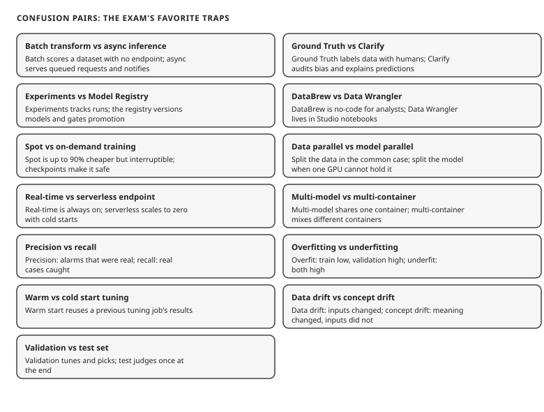
Confusion pairs: two services that look alike, one crisp difference each.
Confusion pairs: the exam's most repeated traps. Source: original figure for the AWS AIP-C01 Study Guide.
Confusion pairs: two services that look alike, one crisp difference each.
Mechanism
The knowledge is built. This section compresses it into the trees you read thirty minutes before the test.
Thirty minutes before the test, read this section and nothing else. Every scenario question on MLA-C01 reduces to one of these trees.
Tree 1: Which algorithm?
1 Table with labels, classify or predict a number XGBoost; Linear Learner for a fast baseline
2 No labels, find groups K-Means
3 Find the odd ones out Random Cut Forest
4 Forecast over time DeepAR
5 Sparse clicks, recommend Factorization Machines
6 Text topics or fast text classification LDA or BlazingText
7 Nothing fits Bring your own container
Tree 2: Which inference option?
1 Live answers, steady traffic, tight latency Real-time endpoint
2 Live answers, spiky or rare traffic Serverless inference
3 Minutes are fine, big payloads, S3 in and out Asynchronous inference
4 Score everything on a schedule Batch transform, no endpoint
Tree 3: Which drift, which response?
1 Inputs changed shape Data drift: check the feature pipeline, retrain on fresh labels
2 Inputs look fine, accuracy fell Concept drift: the world moved; only new labels fix it
3 Group outcomes diverged Bias drift: Clarify metrics on a schedule, retrain or reweight
4 Alarm fires either way CloudWatch alarm, SNS or Lambda, pipeline retrains, registry gates, variant deploys
Tree 4: Which tuning search?
1 Thorough, money is no object Grid search
2 Cheap and usually just as good Random search
3 Learn from past trials Bayesian optimization, the SageMaker default
4 Reuse last week's tuning Warm start, transfer learning tuner
Confusion pairs: the exam's most repeated traps
Each pair has one crisp difference. Cover the right side and name the difference before checking. The exam separates services exactly this way.
Pair
The one-line difference
Batch transform vs async inference
Batch scores a dataset with no endpoint; async serves queued requests and notifies on completion
Ground Truth vs Clarify
Ground Truth labels data with humans; Clarify audits bias and explains predictions
Experiments vs Model Registry
Experiments tracks runs; the registry versions models and gates promotion
DataBrew vs Data Wrangler
DataBrew is no-code for analysts; Data Wrangler lives in Studio notebooks
Spot vs on-demand training
Spot is up to 90% cheaper but interruptible; checkpoints make it safe
Data parallel vs model parallel
Split the data in the common case; split the model only when one GPU cannot hold it
Real-time vs serverless endpoint
Real-time is always on with steady latency; serverless scales to zero with cold starts
Multi-model vs multi-container endpoint
Multi-model shares one container across many models; multi-container mixes different containers
Precision vs recall
Precision: alarms that were real; recall: real cases caught
Overfitting vs underfitting
Overfit: train low, validation high; underfit: both high
Warm start vs cold start tuning
Warm start reuses a previous tuning job's results
Data drift vs concept drift
Data drift: inputs changed; concept drift: meaning changed, inputs did not
Validation vs test set
Validation tunes and picks; test judges once at the end
MLA C01 Certification in 2026: Your Complete Study Resource (GetCertPrep) Click to load this video from YouTube
Watch: MLA C01 Certification in 2026: Your Complete Study Resource, by GetCertPrep. ID-verified, transcript vetted. A full walkthrough from data engineering through endpoints, Model Monitor, Pipelines, and Clarify, in plain language with worked examples. Watch at 1.5x as a final review pass.
AWS Machine Learning Associate Exam Walkthrough 101 AWS ML Pipelines (Jules of Tech) Click to load this video from YouTube
Watch: AWS Machine Learning Associate Exam Walkthrough 101 AWS ML Pipelines, by Jules of Tech. ID-verified via oembed. Subtitles hit rate limits at check time; coverage confirmed from the published outline. Covers pipeline DAGs, deployment strategies (multi-model endpoints, auto-scaling, blue-green), and monitoring with Model Monitor, Clarify, and human review. Watch after Domains 3 and 4.
A hospital needs tumor predictions in real time, misses are unacceptable, and traffic is steady around the clock. Which two choices fit?
A)Real-time endpoint and optimize for recall
B)Batch transform and optimize for precision
C)Serverless inference and optimize for accuracy
D)Async inference and optimize for F1
Correct: A. Steady live traffic with a hard latency need is a real-time endpoint; the cost of a miss makes recall the metric.
B is wrong: batch cannot serve live requests, and precision optimizes the wrong error. C is wrong: serverless cold starts threaten latency, and accuracy hides misses on rare positives. D is wrong: async answers in minutes, not milliseconds.
A model registry shows v7 as PendingManualApproval and v6 as Approved and deployed. A drift alarm fires. What happens next?
Correct: B. The loop never changes: alarm, pipeline retrains, registry gates, human approves, new variant deploys.
A is wrong: pending means exactly that it does not deploy itself. C is wrong: nothing says v6 is bad; rollback is for bad deploys, not drift. D is wrong: Debugger watches training jobs, not endpoints.
Which service pair handles "analysts with no code clean weekly CSVs" and "prove the loan model is fair"?
Correct: A. DataBrew is the no-code cleaning tool; Clarify audits bias and explains predictions.
B is wrong: Glue is for engineers, Ground Truth labels data. C is wrong: Data Wrangler is notebook-based, Debugger watches training. D is wrong: Athena queries, Model Monitor watches drift.
MLA-C01 is a judgment exam, not a math exam. Data lives in S3 and moves through Glue, DataBrew, or Data Wrangler. XGBoost wins tabular comparisons. Spot plus checkpoints wins on cost. Precision and recall win on metrics, never accuracy on imbalanced data. You pick endpoints by latency need. Pipelines retrain, the registry gates, variants roll out. Model Monitor watches for drift, and IAM plus VPC plus KMS lock it all down. When in doubt, read the last sentence of the question first and look for the deciding word.
Volatile. Quotas, model IDs, and prices move. The prose below was checked against AWS documentation on 2026-09-28. Re-check any quota or price before exam day.
Thirty minutes before the test, read this section and nothing else. Every scenario question on MLA-C01 reduces to one of these trees.
Watch: AWS Machine Learning Associate Exam Walkthrough 101 AWS ML Pipelines, by Jules of Tech.
Worked scenario
Each question in this section is the worked scenario. Read the last sentence of the stem first. That sentence is the constraint.
Exam trap
MLA-C01 is a judgment exam, not a math exam. Data lives in S3 and moves through Glue, DataBrew, or Data Wrangler.